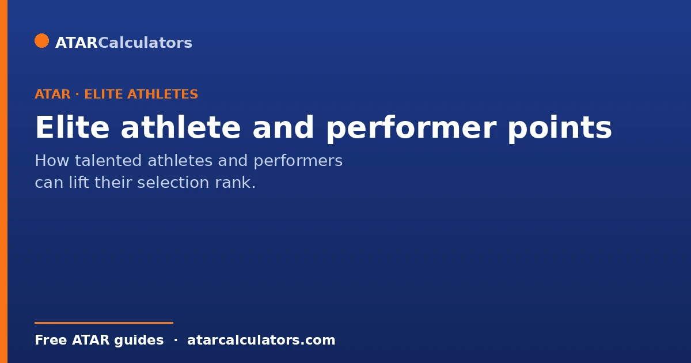
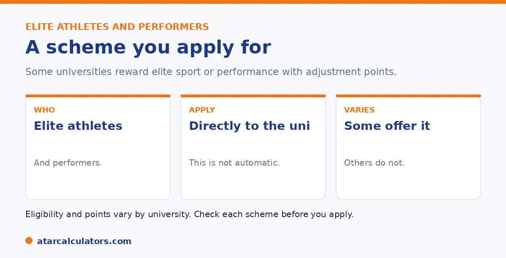

Here is the short version. Some universities offer adjustment schemes for elite athletes and performers, recognising the demands of high-level sport or performance during Year 12. These usually need a separate application, with evidence of your level. Not every university offers them, and the points and criteria vary. So check each university's scheme directly before you apply.
Training or rehearsing at a high level alongside Year 12 is demanding, and some universities make allowances for it. The schemes are easy to miss if you do not know they exist.
Below is how they work, and how to apply. To estimate your selection rank, use our bonus points calculator.
Key takeaways
- Some universities reward elite athletes and performers.
- The schemes recognise the demands of high-level commitments.
- They usually need a separate application, with evidence.
- Not every university offers them.
- Points and criteria vary by university.
- Check each university's scheme before applying.
What these schemes are
Some universities run schemes for elite athletes and performers. They know that high-level training, competition, or rehearsal can take time away from study in Year 12.

The schemes vary in name and detail. The idea is the same: to give talented athletes and performers a fair chance at university.
Who qualifies
Eligibility usually depends on your level. Schemes often look for sport or performance at a state, national, or world level. Or they look for backing from a relevant body. The exact bar varies by university.
Performers, such as musicians, dancers, or actors, may qualify too at some universities. If you compete or perform seriously, check what level a university asks for.
How to apply
Unlike subject and location points, these are not automatic. You usually apply on your own. You do this either with the university or through your admissions centre, depending on the scheme.
You will need proof of your level, such as records of competition, selection, or awards. Apply by the deadline, which is often well before offers. Your coach, club, or teacher can often help.
Want to estimate your selection rank?
Try the bonus points calculator →It varies by university
The main point is that these schemes vary a lot. Some universities offer them; others do not. The points, and the level needed, differ from one university to the next.
So do not assume a scheme at one university exists at another. Check each one on its adjustment page. See our bonus points guide.
Because these schemes are so varied, it pays to know what to look for and to plan early. The level of sport recognised differs widely. Some universities reserve elite-athlete adjustments for those competing at state, national or international level. Others also recognise students in high-performance development squads, or with significant representative commitments. The evidence needed is usually specific, often a letter from a state or national sporting body confirming your level and competition record. So gathering that documentation ahead of the application deadline matters.
The points themselves are modest. Like all adjustments, they feed into your selection rank rather than your ATAR. They are capped by the university’s overall limit and the 99.95 ceiling. The schemes exist to recognise that serious training and competition eat into study time. So they are genuinely aimed at students balancing elite sport with Year 12, not casual participants.
The practical approach is to identify early which universities on your list run an athlete scheme. Confirm the level and evidence each one needs. Then line up the paperwork from your sporting body well before applications open. A late or unverifiable claim is the most common reason a legitimate athlete misses out.
What counts as an elite athlete
Elite athlete schemes generally target students competing at a high level, such as state, national or international representation, or membership of an elite squad or program. The exact definition, and the level required, is set by each university’s scheme.
So “elite” has a specific meaning here, usually well above school or club sport. Check the criteria for each university, since what qualifies at one may not at another, and the required level varies.
Performers and other schemes
Many universities extend these schemes to high-level performers in areas such as music, dance or drama, recognising the demands of serious training and performance commitments. Some also cover other significant commitments, depending on the university.
So the scheme is not only for athletes. If you have had a major performance or training commitment at a high level, check whether your target universities recognise it, since the categories vary.
The documents you need
Applications usually require evidence of your level, such as confirmation from a sporting body, academy or performance organisation, and details of your commitments. Each scheme sets its own required documents and its own application process and deadline.
So gather evidence of your representation or program membership early, and apply directly to the university or through your admissions centre as required. Missing the process or deadline can mean missing the adjustment.
Beyond bonus points
Elite athlete and performer schemes sometimes offer more than adjustment points. Some provide flexible entry, alternative consideration, or ongoing support such as flexible timetables and academic assistance once you are enrolled, to help you balance study with your commitments.
So the value can extend past admission. If you are a high-level athlete or performer, it is worth asking each university what support it offers beyond the initial adjustment, since ongoing flexibility can matter as much as entry.
When and how to apply
Elite athlete and performer schemes usually require an application, either directly to the university or through your admissions centre, by a set deadline. You provide evidence of your level and commitments, and the university assesses it against its scheme.
So these are application-based, not automatic. Note the deadline early and prepare your evidence, since a late or incomplete application can mean missing the adjustment or support you were entitled to.
Is it worth applying?
If you compete or perform at a genuinely high level, these schemes are worth pursuing. Beyond any adjustment points, the flexible entry and ongoing support some offer can make balancing study with training much more manageable.
So if you meet the criteria, it is usually worth applying. The potential benefits, both at admission and during your studies, tend to outweigh the effort of assembling the required evidence.
Common questions
Do elite athletes get bonus points?
At some universities, yes. Several offer adjustment schemes for elite athletes, recognising the demands of high-level sport during Year 12. Not every university offers them, and the points and criteria vary, so check each one.
How do I apply for elite athlete bonus points?
You usually apply separately, either directly to the university or through your admissions centre, with evidence of your level. These are not automatic, and you should apply by the deadline, which is often well before offers.
What counts as an elite athlete for university?
It varies by university, but schemes often look for competition at a state, national, or international level, or recognition by a relevant sporting body. Check each university's scheme for the exact level needed.
Do performers get bonus points too?
At some universities, yes. Performers such as musicians, dancers, or actors may qualify under similar schemes. As with athletes, the criteria and points vary by university, so check each one directly.
Are elite athlete bonus points automatic?
No. Unlike subject and location adjustments, these need a separate application, with evidence of your level. Apply directly to the university or through your admissions centre, by the deadline.
Estimate your selection rank
See how adjustments could change your selection rank. Free, and no signup.
Open the bonus points calculator →Related guides
This guide is general information for students and parents, not formal admissions advice. Adjustment factors, schemes, caps and course cut-offs are set by each university and can change every year. They differ from one institution to another, and from course to course within the same institution. Always confirm the current details with the specific university and your state admissions centre (UAC, VTAC, QTAC, SATAC or TISC). A useful starting point is UAC's guide to selection rank adjustments. Reviewed by the ATARCalculators Editorial Team.